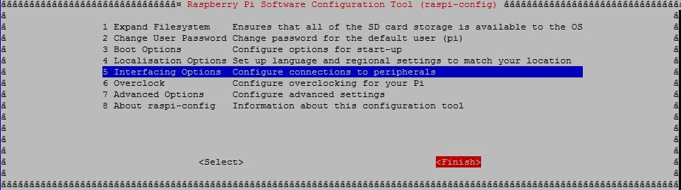

Asynchronous Serial Communication
In serial communication, data is transmitted over a serial interface one bit at a time. ‘Asynchronous serial communication’ is a serial communication that does not require an external clock signal. This transmission ensures the minimum number of wires and the I/O pins for data transmission. However, this communication requires some additional error detection methods to ensure reliable data transfer.
A ‘baud rate’ specifies how fast the data is sent over a serial line. The baud rate is usually represented as bits per second (bps). The most common baud rate used in serial communication is at 9600 bps.
Data in serial communication is transmitted in a ‘packet’ or a ‘frame’. A data frame consists of a ’start’ bit, ‘data’, ‘parity bit’, and a ‘stop bit’. A ‘start bit’ indicates an idle data line changing its value from 1 to 0. A ‘stop bit’ indicates the transition back to the idle state by holding the line at 1.
A ‘parity bit’ is way of error detection in asynchronous serial data transmission. An ‘even parity’ sets the parity value to ‘1’ when the number of ‘1s’ in the data transmitted is odd. An ‘odd parity’ sets the parity value ‘1’ when the number of ‘1s’ in the data transmitted is even.
The serial port has 'transmit' signal TxD and 'receive' signal RxD. To connect a serial device to another serial device, connect the 'TxD’ of one device to the 'RxD' of the other device.
Serial Interface in Raspberry Pi Board
The Broadcom chip at the heart of the Raspberry Pi uses 0 and 3.3 V logic levels. You may need to use a level shifter. You can also connect devices via USB to the Raspberry Pi™ hardware.
To create a connection to a serial device, the default serial connection port is ‘/dev/ttyAMA0’ for Raspberry Pi boards, except for Raspberry Pi 3 board. For Raspberry Pi 3, the serial connection port is ‘/dev/ttyS0’. Before continuing, research the manufacturer's product information to determine which baud rate, data bits, parity, and stop bit settings the serial device supports.
For more information, refer to The Raspberry Pi Serial Port (MATLAB Support Package for Raspberry Pi Hardware).
Troubleshooting Serial, SPI, and I2C Interface
The Raspberry Pi serial port is configured to be used for console input/output. To use the serial port to connect and communicate to other devices such as Arduino boards, you need to disable the serial port console login.
To disable the serial port console login:
Connect to the Raspberry Pi hardware using SSH (Secure Shell).
Enter the command:
sudo raspi-configThis command opens the Raspberry Pi Software Configuration Tool window.
Select Interfacing Options and click Select.
In the next screen, select Serial option and click Select.
In the next screen, select ‘No’ to indicate that you do not want a login shell to be accessible over serial.
The next screen confirms that the login shell is disabled over the serial. Click Ok.
In the next screen, click Finish.

The next screen may ask you to reboot your Raspberry Pi board.
In that case, click Yes.
Sometimes, the SPI or I2C module may not automatically loaded
in the kernel. To enable this, you again need to execute the sudo
raspi-config and select Interfacing Options.
Select SPI or I2C option. For example, to enable SPI interface, click SPI option.
In the next screen, press Yes.

The next screen displays that the SPI is enabled, press Ok.
You may need to reboot your Raspberry Pi board.